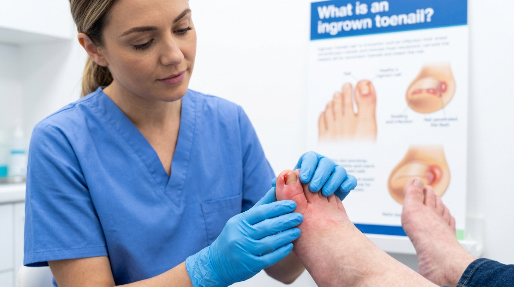

Foot conditions
What is an ingrown toenail?

An ingrown toenail is one of those problems that starts as a small niggle and can quickly become genuinely painful. Here's what causes one, how to spot it early, and what you can do about it.
What actually happens
An ingrown toenail develops when the side or corner of the nail grows into the skin beside it rather than over the top of it. The big toe is the one most often affected, on one or both sides. As the nail presses in, the skin becomes red, swollen and tender, and the toe can be sore to touch or uncomfortable in shoes.
If the skin around the nail becomes infected, you may notice the pain increasing, more swelling and redness, and sometimes yellow or green discharge. That's the point at which it needs proper attention rather than hoping it settles.
Why it happens
There's rarely one single cause, but the usual culprits are well known. Cutting the nails too short, or curving them down at the corners rather than cutting straight across, encourages the skin to fold over the nail edge. Tight shoes, socks or tights press the nail into the skin. Sweaty feet soften the skin and make it easier for the nail to break through. And sometimes it's simply the natural shape of the nail, an old injury such as a stubbed toe, or a fungal infection that has thickened the nail.
The short version
Cut your toenails straight across, not right down into the corners, and don't cut them too short. Wear shoes with room at the toes. Those two habits prevent the majority of ingrown toenails - and if one has already taken hold and is painful, don't dig at it yourself.
What helps prevent them
The advice is refreshingly simple. Cut the nails straight across the top rather than following the curve of the toe, and avoid cutting right to the edges or leaving sharp corners behind. Don't cut them very short. Choose comfortable shoes that genuinely fit, with enough room across the toes. Keep the feet clean and dry them properly after washing, particularly between the toes.
When to see a podiatrist
It's worth getting an ingrown toenail looked at if it's painful, if it keeps coming back, or if you can see any signs of infection. A podiatrist can relieve the pressure properly, remove the offending piece of nail safely, and talk through why it happened so it's less likely to recur.
One important exception: if you have diabetes, poor circulation or a weakened immune system, don't wait and don't attempt to treat it yourself. Get professional advice early, because foot problems can progress more quickly and need closer monitoring.
It's also best to resist the temptation to perform "bathroom surgery" on a sore toe. Digging out the corner of a nail with scissors usually makes the problem worse and risks introducing infection.
This article is general information based on NHS guidance on ingrown toenails, and is not a substitute for individual advice.